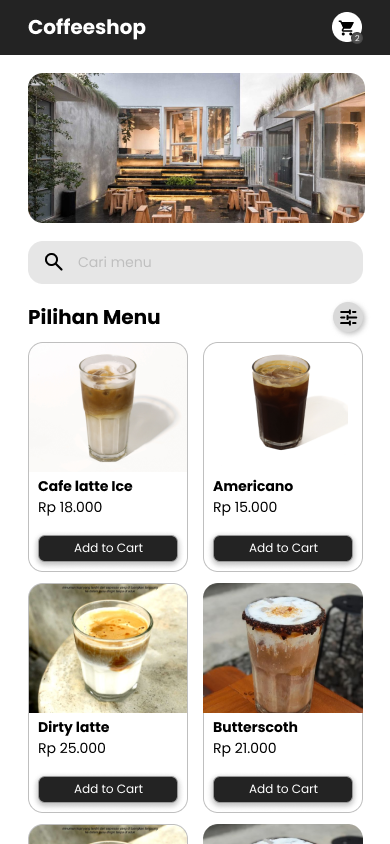
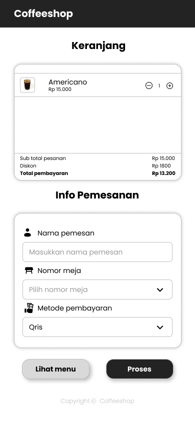

A mobile-first web menu redesign for a local coffeeshop, focused on improving menu discoverability and in-store ordering experience through a simple and intuitive interface.


Many coffeeshops rely on QR-based digital menus for in-store ordering, yet these menus are often poorly optimized for mobile use. Users struggle with cluttered layouts, unclear menu categorization, and limited search functionality, making it difficult to quickly find items. As a result, customers frequently require assistance from staff, slowing down the ordering process and reducing overall dining experience quality.
The goal of this project was to redesign a mobile web menu that allows customers to browse and select menu items quickly and independently while dining in. The experience aims to be mobile-first, easy to scan, and visually clear, ensuring users can understand menu options, prices, and availability without friction or staff assistance.
The design process began with observing how customers interact with QR-based menus in a coffeeshop environment. Common pain points such as excessive scrolling, lack of visual hierarchy, and difficulty finding specific items were identified. Wireframes were then created using a mobile-first approach, focusing on clear content prioritization, simple navigation, and thumb-friendly interactions. The visual design emphasized clean layouts, consistent spacing, and card-based menu presentation to support quick scanning. High-fidelity mockups were developed to reflect real menu items, pricing, and realistic browsing scenarios.
The redesigned web menu provides a streamlined browsing experience tailored for in-store mobile use. A prominent search feature allows users to quickly find specific menu items, while structured menu cards clearly display images, names, prices, and primary actions. By simplifying navigation and reducing visual clutter, the interface lowers cognitive load and guides users smoothly from browsing to selection. This approach enables faster decision-making and improves both user experience and operational efficiency for the coffeeshop.
This project highlighted the importance of designing for real-world context, particularly mobile usage in physical spaces. Small UX decisions such as search placement, card hierarchy, and spacing significantly impact how quickly users can interact with a digital menu. The redesign demonstrates that a clear and focused interface can reduce dependency on staff and improve customer autonomy. Future iterations could explore order confirmation flows, customization options, and accessibility improvements to further enhance the experience.